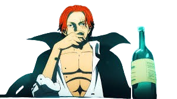

Red-Haired Shanks is one of the Four Emperors in the world of One Piece. He is known for his incredible power, balanced leadership and mastery of Haki. He inspired Monkey D. Luffy by giving him the straw hat.
The Red Hair Pirates rely purely on physical strength and Haki with no Devil Fruit users among core members.
The crew is regarded as the most balanced Yonko crew with no major weaknesses.
Shanks possesses unmatched Haki mastery, including rare advanced techniques.